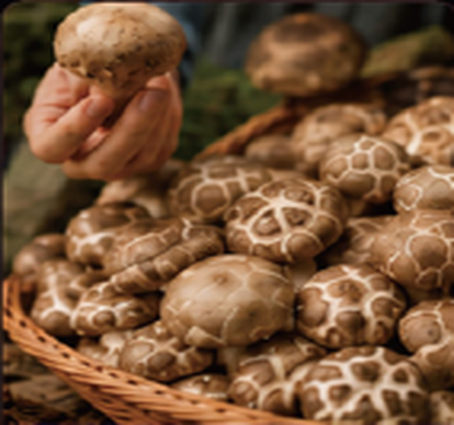
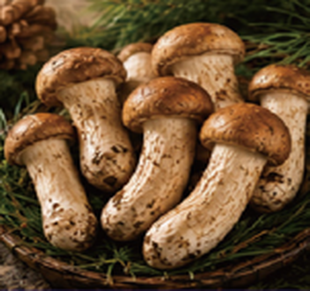
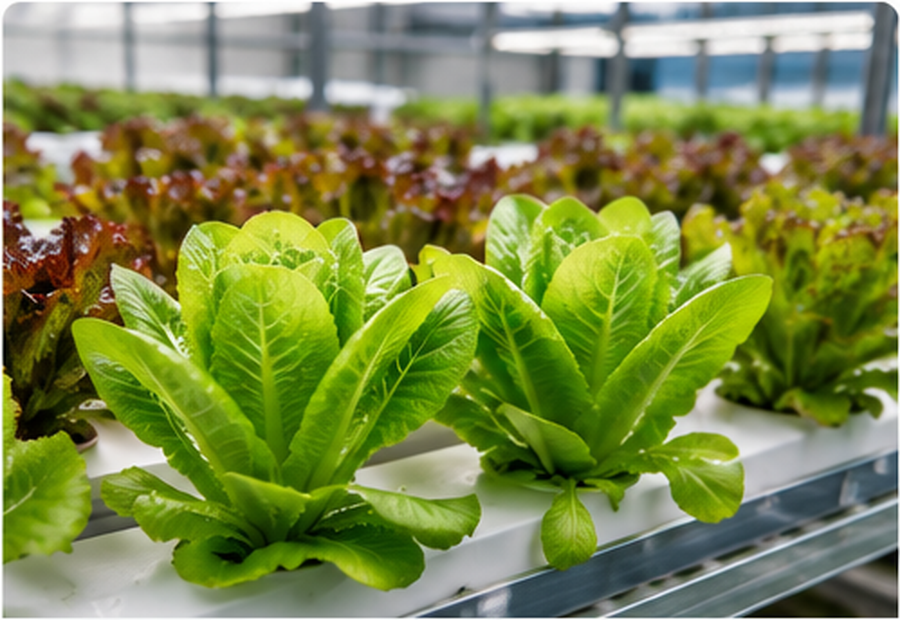
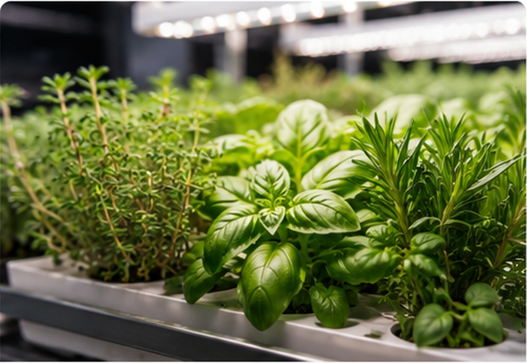
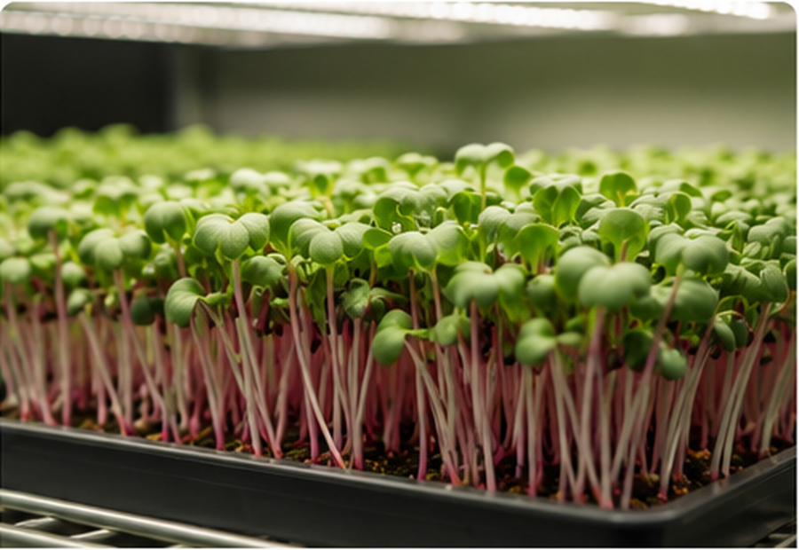
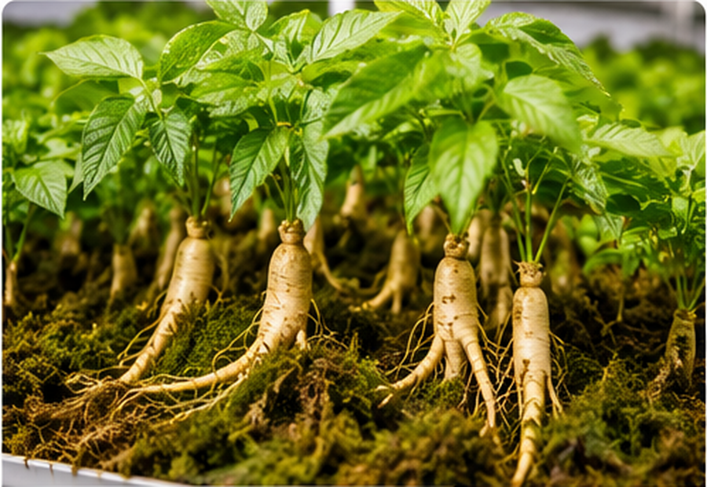
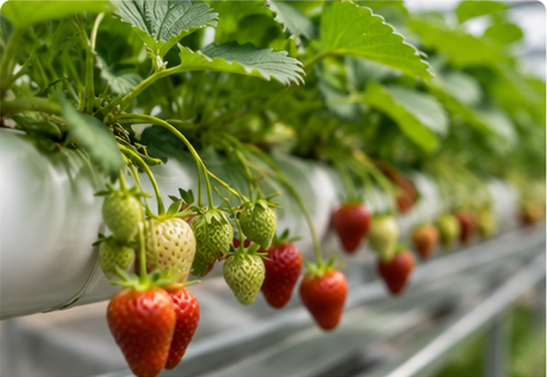
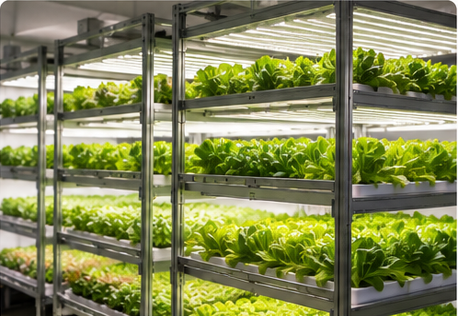

높은 초기 투자 비용
시작부터 큰 비용이 부담돼요.
스마트팜 창업과 운영에 고민이 많으신가요?
시작부터 큰 비용이 부담돼요.
지속적인 관리 비용이 걱정돼요.
전문 지식이 없어도 운영이 쉬워야 해요.
큐브 스마트팜은 이런 고민을 해결합니다!
비교할수록 확실한 차이
AI와 IoT 기술로 최적의 생육 환경을 제공합니다.
AI가 환경을 분석하고 자동 제어
정밀한 센서로 실시간 모니터링
최적의 온도를 자동 유지
작물 생육에 맞춘 습도 조절
식물 생장에 필요한 조명 제어
언제 어디서나 관리 가능
투자는 줄이고, 효과는 높이고!
채소, 허브, 새싹채소, 기능성 작물과 과일까지 다양한 식량 생산을 지원합니다.

이슬송이
참송이
채소상추, 케일, 로메인 등 다양한 잎채소를 안정적으로 재배합니다.

허브바질, 로즈마리, 타임 등 향이 풍부한 허브를 신선하게 키웁니다.

새싹채소무순, 브로콜리싹 등 새싹채소를 빠르고 위생적으로 생산합니다.

기능성 작물인삼, 밀싹, 알로에 등 건강 기능성을 가진 작물을 지원합니다.

과일딸기와 베리류 등 고품질 과일을 신선하게 재배할 수 있습니다.

다양한 미래 식량큐브 스마트팜 하나로 여러 미래 식량을 지속적으로 생산합니다.
상담부터 운영 지원까지 함께합니다.
고객 상황 및 니즈 파악
최적의 솔루션 제안
전문적인 설치 및 구축
운영 교육 및 초기 지원
지속적인 관리 및 A/S
상담과 도입을 경험한 고객들의 목소리를 확인하고 후기를 남겨보세요.
초기 비용과 공간 문제 때문에 고민이 많았는데, 큐브 단위로 시작할 수 있다는 점이 가장 현실적으로 느껴졌습니다.
비교 자료와 운영 절차가 명확해서 내부 검토가 수월했습니다. 유지관리 부담을 줄일 수 있다는 점이 인상적이었습니다.
미래 농업 교육과 실증 사업에 활용하기 좋은 구조였습니다. 상담 과정에서 적용 분야를 구체적으로 잡을 수 있었습니다.